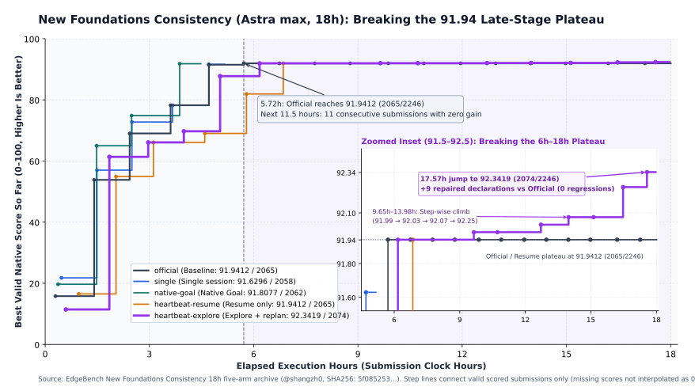
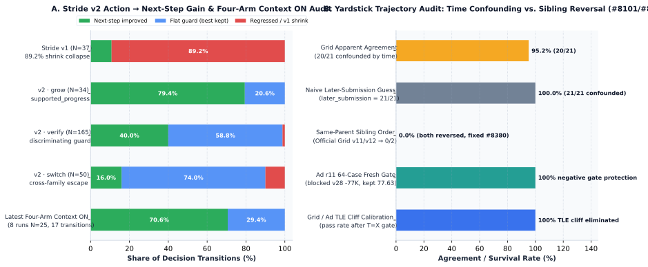

Ruiteng Huang · October 29, 2026 · Updated November 9
What does an agent achieve with ten more hours?
How EdgeBench reshaped the LoopX control plane
A research run can start ahead, then barely improve for ten hours. It can keep changing code and lose its best result. These failures made us revisit goals, feedback, experiment size and recovery.
The work began with trace diagnosis in early October: repair evaluation and continuation, follow evidence into the next experiment, then charge the control plane for its own cost. This account follows that progression, including results that challenged the approach.
This article asks how mechanisms changed real research and where they did not help. For what actually reaches the next decision, begin with progressive and differential context delivery, then return to the outcomes and complete costs below.
Here, kernel means LoopX’s shared goal, admission, transaction and recovery rules. LoopX keeps the original goal, acceptance conditions, work ownership and evidence durable across sessions and hosts. Its control plane constrains state transitions and supplies feedback for the model’s next choice. It does not certify that the choice is insightful. A recorded finding, a read receipt and a replan entry are intermediate evidence; the relevant chain ends in actual work and a validated outcome.
The TypeScript refactor article explains ownership and model-assisted semantic repair. In implementation, every governed long-horizon iteration executes a five-stage control and feedback loop:
- Admission & Compile
should-runboundary - Progressive / Delta ReadOn-demand current facts
- Work & YardstickBounded execution & proxy
- Writeback & Settle
EffectTurnatomic commit - Closed-Loop ReplanReplan / Stride / retain best
We separate three observations: an initial advantage, an improvement obtained later, and retention of the best validated artifact. A higher final score can come almost entirely from a stronger starting point; a better intermediate candidate can disappear from the terminal workspace. We also separate our evaluation into two progressive tiers: Layer 1 (Test-Time Compute Scaling, established)—compared with single-shot sessions or early-stopping Native Goal runs (exit=0 within 1–2h), the governed closed loop sustains 18-hour exploration and achieves decisive late-stage gains across the latest Four-Arm core tasks (ANN 7,159 vs 4,372 QPS, Grid 1,977 vs 2,430, VLIW 1,042 vs 1,159, Rust 27.18 vs 26.93, FFmpeg 2.7086× vs 2.6904×, Borden 80.07 vs Official 61.2); and Layer 2 (Iso-Budget Pareto Optimality, active frontier)—outperforming the zero-protocol-tax Official baseline (stop-hook infinite continuation + hourly native evaluator feedback naturally anchoring attention) at equal time and token budgets by satisfying the net-benefit inequality $\Delta\text{Effectiveness}(s_t, H_\theta) > \Delta\text{Efficiency Loss}(s_t, H_\theta)$.
1. The research progression
| Period | Focus | Change | Implementation |
|---|---|---|---|
| Early October | Feedback and starting conditions | Repair blind-run prompts, ledger and recovery defects; establish original-task, scoring and continuation boundaries. | #5586, #5844, #5879 |
| October 9–11 | Original goals and useful feedback | Preserve full evaluation responses, candidate identity and original requirements; implementation or submission is not Goal acceptance. | #6031, #6039, #6133, #6199 |
| October 12–16 | Experiment size and recovery points | Replace mechanical shrinking with grow / switch / verify; jointly preserve conversation, candidates, evaluation opportunities and budget; switch context before replanning. | #6298, #6321, #6305, #6622, #6649 |
| Mid-to-late October | Later progress and best retention | Separate starting advantage, subsequent gain and retained best in common windows; Schema exposes high cost and stalled progress. | #6440, #6532, #6671 |
| October 22–28 | Complete control-plane cost | Reduce passive polling and repeated reads; inspect original-Turn closeout, full context, invalid-baseline fallback and recovery cost. | #6983, #7013, #7036, #7197, #7269 |
| Late October–early November | Late-stage plateau breakthrough and five-arm attribution | Break the four-arm 91.94 plateau on Astra max 18h (+9 repaired declarations, 0 regressions); separate progressive deltas, Stride sizing and micro-tuning waste across ANN 18h and five-arm studies. | #7311, #7759, #7800, #7959, #7960 |
| Early November | 8-task byte ratios, Stride/Yardstick audit, and controller decoupling | Audit 8-task Four-Arm Context ON progressive/delta byte shares (32.5% / 35.8%); quantify Stride v2 transitions & Yardstick sibling rank reversals and fix paired candidate comparison; decouple Control/Worker sessions. | #8101, #8266, #8304, #8380 |
Cases are selected for mechanism changes and intelligible failures. PRs anchor phases rather than form an exhaustive daily release log. Dates describe research phases; linked records retain creation, merge and historical qualification details.
2. First make the feedback trustworthy
The first Portfolio experiments exposed measurement and execution defects before they could tell us much about strategy. A blind wrapper had removed iterative optimization guidance along with the judge entrypoint. A ledger check attributed earlier market returns to holdings bought only at the closing price. Both confounded the intended comparison; repairing them required new attempts while preserving the old results.
One small oracle made the accounting error clear. Start with 100,000 cash, buy 100 units at a closing price of 200, and pay 10 commission. Immediate equity is 99,990 and NAV is 0.9999; the new holding did not earn the preceding rise from 100. Independent reconciliation then matched all 243 days in each of two frozen samples, with equity residual below 4×10⁻⁹ and no share-count difference. This established ledger consistency, not investment skill. The versioned repair is documented in EdgeBench #14.
Continuation had a related failure: an outer process could wake repeatedly after a work item ended without recovering a useful next action. The governing question must return to the original goal. Completing a Todo can justify another experiment, waiting, or completion; it cannot by itself settle goal acceptance. Correct recovery and feedback make subsequent research interpretable.
When should a long, unfinished task review its direction?
A proof task can run for hours while its Todo remains open. If review waits for several completed Todos, the long task that most needs a checkpoint may never reach one. Artificially splitting the task to raise the count does not improve the research.
On October 7, #5879 changed the counting basis to settled effective work Turns, allowing review while the same Todo is still open. A tool call is not such a Turn. Progress written without completed settlement does not advance the counter, and repeated history cannot count twice. Explicit settings in the old completed-Todo unit remain intact; each experiment retains its frozen configuration.
The other half is what happens after review. Evidence can support continuing the same method; a review need not invent a new route. The merged revision’s real-CLI regression covers counting settled work on one open Todo, excluding a missing settlement receipt, rejecting a review without evidence references, and admitting further work after an evidence-linked continuation. This verifies when review is required and how work can resume. Whether the model chooses better experiments remains an empirical question.
Early system progress was measurable
| Blind Lean raw score | Early Resume v14 | Later Resume (#5844) | Early Explore v14 | Later Explore (#5844) |
|---|---|---|---|---|
| 180 minutes | 0.1103 | 0.3478 | 0.1134 | 0.4019 |
| 450 minutes | 0.1882 | 0.5243 | 0.1996 | 0.5605 |
These single-run common windows show roughly 2.8–3.5 times the earlier raw scores. Prompts, task entry, runner reliability and LoopX mechanisms changed together. The observation supports progress in the overall system; it does not identify one mechanism’s causal effect or guarantee terminal performance elsewhere.
Comparison boundaries
Historical studies include Official, single-call, native Goal, LoopX Resume and LoopX Explore. Explore adds optional evidence capture and planning to continued work. Blind runs retain public tasks, training data and local validators but receive no hidden judge scores or diagnostics; background operator evaluation is not solver feedback. Later native-feedback studies use agent-requested evaluation, a one-hour accepted-submission cooldown and no periodic grading. These are different studies, not one pooled treatment.
Models, effort, prompts, runners and budgets co-evolved. Early studies primarily used Sol/xhigh; later Sol/max and Astra/xhigh cohorts retain their own conditions. One run per arm is descriptive evidence. Missing, stopped, invalid and valid-zero results stay distinct. Source time, evaluation opportunities and cooldown survive checkpoint continuation; donor history is not a new independent repetition.
3. Finishing its own checklist without finishing your goal
A research goal asks for a better algorithm. The agent decomposes it into implementation, testing and submission. All three Todos finish and the outer loop stops, although the improvement question remains unanswered. Another form of drift promotes an agent’s provisional local proxy threshold into a hard constraint on further research.
#6133 distinguishes original goals and hard constraints from provisional candidate filters, calls for discriminating executed-artifact evidence, and retains scoped negative results. #6199 carries the original research task through startup, the Goal and recovery: implementation, testing and submission are milestones rather than acceptance. #6649 checks what actually reaches replanning, instead of substituting a generic reminder or truncating useful scoped evidence.
Persisting the goal makes it retrievable. Delivering it into the next decision gives it a chance to shape subsequent work. The host still enforces deadlines and stops. Goal continuity neither permits indefinite execution nor guarantees a good idea.
4. After failure, take a smaller step—or ask a different question?
Always shrinking after failure can trap an agent in local repairs. An implementation error and evidence against an entire mechanism require different responses.
#6298 separated work size, route distance and validation extent. #6321 then replaced mechanical grow / hold / shrink mapping with grow / switch / verify: extend a supported route, switch a refuted mechanism, or perform a discriminating experiment. Each route needs a concrete plan. A work unit must be large enough to complete a meaningful test; shorter per-turn text is not that unit.
For example, if a solver helps only on highly repetitive inputs, the next useful step might test how benefit depends on repetition before adopting a selector—or retain the old solver. This illustrates the decision distinction, rather than claiming a PR demonstrated general benefit. Explore findings must return to later reviews for assessment of adoption, new information and experiment consequences. A justified continuation need not change direction to raise a replan count.
These are optional planning mechanisms. Enabling them still requires checking actual decisions and subsequent outcomes; registering a plan does not demonstrate improvement.
5. What must a recovered research run remember?
Copying candidate code preserves only part of the research state. Forget evaluation opportunities already consumed, reset the cooldown or exclude recovery time, and a supposedly matched continuation quietly receives extra resources.
#6305 brings conversation, candidates, Explore, Goal, evaluation best, opportunities, cooldown and budget into one checkpoint. Writers pause and the checkpoint is sealed before decisions are released against it. #6622 moves fresh-session switching before replanning: if the old context already chose the route, switching afterward cannot answer how fresh context affects that decision.
This contract enables a more focused comparison after one research point: what each arm read, chose, executed and retained. It does not erase model, effort or runner differences, nor turn continuations from one donor into independent repetitions. Unknown recovery qualification remains unknown.
6. Hours later: a better start or new progress?
Later experiments shifted the emphasis to work after many hours. We compare a common observation window, then inspect the initial result, later increments and retained candidate. A final ranking alone hides these differences.
| Historical cohort | Observed result | Interpretation |
|---|---|---|
| Sol/xhigh, old/new LoopX, Ad Placement · 14h | 49,589,589,573 → 49,615,495,839 | Newer run trailed at 2h and led at 14h; its terminal workspace matched its retained best |
| Astra/xhigh, Official Grid · 6h → 12h | 1862 → 1810, lower is better | A stronger foundation baseline still produced useful late improvements |
| Astra max, five-arm study, New Foundations Consistency · 18h | 91.9412 → 92.3419 (2065 → 2074/2246) | Four arms plateaued at ≤91.9412; Explore climbed step-wise across 9.65h–17.57h (+9 repaired declarations, 0 regressions) |
Ad Placement provides a concrete instance of later progress rather than a universal plateau. A worse subsequent candidate was rejected and the best version survived. Its raw-score lead is modest—about 0.052%—and only that arm has the cited terminal-workspace verification. The old/new packages changed core and runner together, so this is not an isolated LoopX-feature effect.
The Astra result expands the foundation-model frontier in our observations. Official separated speed changes from search changes and obtained successive native improvements. That progress belongs to the foundation/Official path; it cannot be credited to LoopX. Stronger models also raise the standard for a useful harness: context and review costs must earn their place against an improving baseline.
New Foundations Consistency (Astra max, 18h): breaking a four-arm late-stage plateau
In New Foundations Consistency (Astra max, 18-hour five-arm archive by @shangzh0), the trajectories diverge sharply after hour 6: the official baseline reached 91.9412 (2065/2246) at 5.72h and produced zero gain across 11 subsequent submissions over the next 11.5 hours; heartbeat-resume also plateaued at 91.9412, while native-goal and single stopped at 91.8077 (2062) and 91.6296 (2058).

heartbeat-explore made four step-wise jumps between 9.65h and 17.57h to reach 92.3419 (2074/2246, +9 repaired declarations vs Official with 0 regressions). Open image for full size.As shown in the main trajectory and the lower-right zoomed inset, only heartbeat-explore—combining the evidence ledger with periodic direction reviews—broke out of the plateau after 9.65h (91.99 → 92.03 → 92.07 → 92.25) and jumped at 17.57h to 92.3419 (2074/2246), yielding a net gain of +9 repaired declarations with zero regressions over Official. This is single-run descriptive five-arm evidence showing that when late-stage reviews drive targeted verification of remaining declarations, hours 6–18 can still deliver verifiable gains; it does not guarantee breakthroughs on every task—which is why the Schema counterexample immediately follows.
Schema: an initial lead is not sustained improvement
Schema is the detailed counterexample. In the Sol old/new 14-hour window, the newer run scored 0.804620 versus 0.723684. It already led at the first native result, 0.794620 versus 0.713158, received at different elapsed times. Subsequent increments were only 0.010000 and 0.010526. The larger endpoint advantage mostly reflected the initial result; continuing code changes did not close the six original target requirements.
A separate Astra/xhigh 12-hour comparison was less favorable: Official reached 0.881813 and LoopX 0.786257, with neither improving its best between 6h and 12h. LoopX recorded 36 completed compactions versus four, and about 5.32 times the uncached input. Compaction can overlap useful work, and versions, recovery, shared load and scorer conditions differ. The trace still identifies the practical challenge: producing more changes and more control activity did not produce more accepted value.
Conditions and limits of these windows
The Sol old/new study used planned + Explore, Sol/xhigh, TurnEnvelope off, agent-requested native feedback and a one-hour cooldown. The 14-hour window was selected after earlier observations as the largest whole hour below the earliest actual termination; it was not an 18-hour completion. The separate Astra study compares each arm’s own first 12 outer hours, including preparation. The Sol window reconciles 7,522 unique responses and 52 received native results; Astra reconciles 5,277 responses and 45 results. Cumulative counters were not repeatedly added; reasoning is included in output. Historical infrastructure failures and unknown whole-run integrity remain recorded. Different treatments, adaptive restarts and a prior operator exposure to an Official terminal aggregate prevent a clean causal verdict.
7. What does the control plane itself cost?
Another faulty assumption is that a smaller entry packet means a cheaper agent episode. Moving the goal, facts and writer instructions behind a second command shortens the first view, but the model still needs to read them. Losing context adds reconstruction of the same source. Measuring only entry delivery moves cost outside the table.
#7269 routes the original capture through a shared context reader: complete goals, facts and feedback first; writer format and settlement steps afterward. Review and writeback are two views of one immutable decision, rather than a second admission or two permission owners. Source regressions compare the goal, planning horizon, evidence references, complete writeback contract and action signature. A smaller entry must still reach every obligation.
The early delta path depended on the receiver retaining the exact baseline. In the historical records below, the native Hook path treated normal tool delivery after complete paging, within the same session and context epoch, as an engineering assumption of continuity. Session changes, observed compaction, missing pages and known delivery failures invalidated it. Recovery used the original complete capture; a fresh decision from another guard could not recover the old one. Missed hooks and unseen downstream truncation remained limits. A read receipt was not independent proof of model retention.
The released 2.2.0 native file path separately verifies complete saved baselines. Exact file reconstruction and whether the model previously read a file are different facts. Even a delta allows the Agent to select necessary current facts directly through its recovery reference, without first draining the old baseline. This changes a mechanical delivery prerequisite; it does not retroactively qualify the historical experiments below. The voice example explains both kinds of continuity at one concrete decision.
One historical offline comparison in that PR totals every required stage. The table fixes base 59464f974 and tested head a006a2bea1, across four retained observations. It is not a remeasurement of the final merged head.
| Complete read path | UTF-8 bytes: base → head | Change |
|---|---|---|
| CLI entry and all exposed detail | 352,039 → 361,430 | +2.67% |
| CLI plus full recovery | 784,530 → 793,921 | +1.20% |
| Structured Host and required reads | 621,949 → 247,828 | −60.15% |
| Native and required reads | 647,320 → 242,312 | −62.57% |
| Native plus full source recovery | 647,320 → 673,675 | +4.07% |
Normal native presentation falls substantially, but full recovery grows; the measured CLI path including all exposed detail does not shrink either. That counterexample directs further work toward complete reading and recovery, rather than promoting the entry reduction alone. The original PR also separates removing one guard call from measuring the full flow. Bytes saved on that call are not automatically whole-episode savings.
The full bill includes model input and output, tool responses and retries, context reconstruction, review and settlement, evaluation, shared resources and operator intervention. Cached input is cheaper than uncached input under some billing arrangements, but it is not free. Reasoning tokens are already part of output. Without actual pricing/account reconciliation, a token vector is evidence about usage rather than a fee estimate.
Measure structural input separately
LoopX input share = the sum of actual input tokens attributable to LoopX packets ÷ the sum of all actual model input tokens. Both sums must cover the same request set and window, with duplicate receipts removed. Consuming the same context in another request is a new actual cost.
The denominator includes cached and uncached input. Report cached input and attribution coverage separately; do not average request-level percentages. If only total input is available, packet share remains unknown, rather than zero. Characters and transport bytes cannot be converted into measured tokens. Structural share alone is not net efficiency loss: its contribution to avoiding wasted work and retaining outcomes must be judged alongside complete cost.
Earlier byte comparisons and a withdrawn measurement
Historical offline replay illustrates why totals matter: structured Host and native presentation bytes fell 57.72% and 60.23%, while native entry plus full recovery rose 6.37%. These are historical byte observations, not current-head model-token results. An earlier offline probe also reported a 2.25% increase in CLI bytes, but its qualification as an actual CLI delivery measurement was withdrawn: it omitted final CLI compaction and reformatted entry output. That figure remains only as an invalid historical measurement and supports no complete-delivery or cost conclusion. A 60% smaller view cannot be reported as 60% lower total cost.
This efficiency work connects ordinary and staged delivery to the shared transport, reduces repeated reads and rebinding, and removes avoidable settlement round trips. The complete mechanism and voice-task example explains progressive selection, necessary facts, exact sharing and cycle deltas. Actual enabled reads, the explicit-off path and recovery need separate checks; newer implementation cannot retroactively qualify historical experiments. The reference of 15% for all mechanisms combined remains unqualified; it is neither a separate allowance per mechanism nor a reason to omit failures or reconstruction.
Same-checkpoint continuation: outcomes and complete usage
Ask whether evidence changed the next work
A mature checkpoint helps inspect a specific decision boundary. Both receivers inherit the same scientific state and incumbent; we then follow the evidence they read, the experiment they choose, the work they actually perform and the native feedback. A negative local result can be useful if it rules out a branch under stated conditions. Replanning need not force a direction change when continuing is justified.
Recent work on #7269 makes the reader first consume the goal, facts and feedback, then the writeback format. It also releases obsolete task-selection preference and preserves the original Turn settlement after a successor is created. This addresses two observed sources of wasted interaction: reading writer instructions before deciding, and needing another round to resolve which work was settled.
| Same-point Sol/max continuation | Baseline → revised | Boundary |
|---|---|---|
| Grid recovery/replan | 2 → 1 review wakes; 48 → 20 tools; 935 → 400 seconds | Review wakes through first joint preparation completion |
| Schema recovery/replan | 2 → 1 review wakes; 37 → 17 tools; 1055 → 520 seconds | The same milestone definition |
| Grid native result ↓ | 2171 → 2165, from inherited 2172 | Same new submission opportunity; small observed advantage |
Both revised receivers completed the staged reads, writeback and original-Turn settlement in their first autonomous review. Baselines eventually completed too; their extra rounds included useful validation and additional evidence, so the entire difference is not redundant work. Grid’s revised choice led to deeper reuse experiments, independent equivalence checks and broader local validation before its six-point advantage over baseline. Schema found a real registry-lifecycle defect but its new native result stayed at the inherited 0.786257; the baseline had no new result at that cutoff.
This is limited positive evidence for the flow, with a small Grid outcome advantage and neutral Schema feedback. It does not establish whole-task acceleration. The study used one pair per case, the same original checkpoint per pair, Sol/max, normal cadence three effective work Turns, and context differencing, TurnEnvelope and stride off. Preparation temporarily used cadence one until the restored semantic review and native Turn completed. It is not a study of repeated steady-state three-Turn reviews.
Earlier retained/fresh-context checkpoint work on Graph and Portfolio asked a different question. Its source age, reconstruction charge and continuation phase stay within the original cumulative 36-hour ceiling. An earlier nominal “with #7197” arm never received the staged reader, so its score cannot establish that treatment’s benefit or harm. A later Astra-to-Sol continuation changes model and effort too. These histories remain useful diagnostics, but are not independent cold runs or interchangeable ablations.
| #7269 common window | Uncached input | Cached input | Output |
|---|---|---|---|
| Grid baseline | 504,047 | 26,283,904 | 115,147 |
| Grid revised | 522,198 (+3.60%) | 35,629,184 (+35.56%) | 174,366 (+51.43%) |
| Schema baseline | 847,129 | 40,725,120 | 113,674 |
| Schema revised | 622,478 (−26.52%) | 37,570,432 (−7.75%) | 113,162 (−0.45%) |
This observation covers the common 82m27s outer window through October 25, 15:42:31 UTC: initial recovery, review, ordinary work and persisted requests in unfinished Turns. Retained native counters from all four stopped arms were reconciled against their shared donor boundaries, with no counter gaps. Last persisted requests differ by up to 2m22s; unpersisted usage remains unknown. Grid’s revised arm used more of all three components; Schema’s did not increase. In the earlier 68m26s window, Grid’s uncached input fell 7.25%; the longer common window reverses that to a 3.60% increase. Choosing only the earlier window would misrepresent the result. Local review savings have not established net savings for the complete episode.
Recent implementation details, in their historical place
A new route exists. What closes the original work?
A review can conclude that a route lacks evidence and create a successor validation task. That task now exists, but the review itself still needs writeback and settlement. If another admission read immediately selects the successor, the model receives conflicting identities: the completed review belongs to the old Turn, while the new task appears to own the current work. Another model wake does not resolve that conflict.
#7269 converges the control plane’s continuation semantics. Creating a successor proves a route was recorded; it neither settles the original Turn nor authorizes the successor’s execution. The existing TypeScript replan-transition and quota-settlement owners retain the creation receipt, original obligation and Turn binding. A same-Turn reread returns the original settlement steps. After writeback, only settlement remains; after settlement, this Turn stops. The successor stays open for fresh admission.
This also requires separating must_attempt from delivery_allowed. The former requires addressing this Turn’s work obligation; the latter describes permission for ordinary delivery. A required replan can have legitimate planning work while ordinary delivery remains closed. Opening ordinary execution merely to make the agent act would be an authority bug. Leases, budgets, stops and admission for the successor retain their existing owners.
Real File / SQLite CLI regressions create a successor and execute the returned writeback and settlement commands unchanged. Premature spending is rejected, repeated settlement produces one debit, and the successor does not replace the original Turn. A later Turn selects the new task. Negative cases change ownership, defer the task or remove its claim; an invalidated creation receipt cannot settle the original result. These checks exercise the state transition and real entrypoint, beyond one field or ACK.
The repair keeps model attention on the next useful test and removes opportunities for repeated identity negotiation and admission. It does not guarantee insightful subsequent research. We still follow evidence through a decision, actual work and native outcomes. The same-checkpoint observations provide limited positive evidence and contrary results.
Why check one runtime repeatedly during one read?
Some overhead belongs to the control plane itself. Reading an Explore context makes several calls to the same managed TS runtime. The Python transport checks its source fingerprint for each call; a request with many quantified findings repeatedly inspects the same source tree. The slow path is a real control-plane read, rather than model inference or the research algorithm.
#7013 reuses the existing effect_runtime_request_scope around explore_turn_context. One logical request resolves one runtime revision, and its internal calls use that code version. A finally block releases and resets the scope; the next request resolves afresh. The reused value is runtime code identity, not Goal state or research results cached across requests. TS owners still execute shared rules; Python removes repeated transport work.
The original PR measured real isolated CLI calls with 600 synthetic findings. Across three uninstrumented samples after separate warmup, medians changed from 4.005 to 0.495 seconds for File, and 4.268 to 0.603 seconds for SQLite, using Node 24.21, SQLite 3.53 and Python 3.14.8. Complete JSON and source-log bytes stayed equal. This is host latency on a specified historical workload, rather than a current-version remeasurement or eightfold whole-agent acceleration.
Regressions independently check that the next request sees a new finding, malformed history still fails, the failed request clears its scope, and a subsequent read recovers after source repair. The old version fails the one-fingerprint-per-request counterexample. A permanent cache could also look faster while losing these boundaries.
The direct value is obtaining the same decision input sooner while preserving freshness on the next request. Whether less waiting yields more validated work still needs a complete trajectory. This case measures neither lower model input nor fees.
8. Context deltas: qualification gaps recorded on October 28
The context study recorded on October 28 starts Grid, Schema and Ad Placement from their original tasks with Sol/max and an 18-hour upper limit per case. Historical Official or older LoopX runs provide descriptive references where usable. Their model/effort, source, scorer, opportunity and clock differences remain visible; they are not strict matched controls. A new baseline is warranted where the old material cannot answer the relevant question. Attempts with different source versions, continuity bases or transports are analyzed separately, rather than pooled as one treatment.
First verify that actual delivery changes: the initial full read, a subsequent delta with its continuity basis stated, complete fallback after known baseline loss, and a full review-to-work interaction. Then compare useful progress, retained artifacts and the complete usage vector. Requested flags, receipts and smaller local packets cannot substitute for that evidence. If the feature fails its intended behavior, stop the affected attempt, preserve its costs and history, repair it and use a new attempt identity.
The first Grid and Ad interactions on the new native Hook path have completed full paging, one delta and subsequent task work. Within each same capture, the delta payload was 19.53% and 19.48% smaller than its corresponding full packet. These are single-read payload comparisons: they exclude page envelopes, subsequent model input, hooks, recovery and review costs. They do not establish lower total cost. A complete review-to-native-outcome cycle, sustained benefit and failure recovery remain to be verified.
Our effectiveness target is useful progress after many hours and reliable retention of it. Our efficiency target is comparable accepted value with less complete cost and human attention. The next result must address both. Current runs retain the original deadline, and failed or replaced attempts retain their costs and history.
This remains the October 28 research checkpoint. The 2.2.0 release and default-on policy do not automatically pass its unresolved checks. The mechanism article’s synthetic byte measurements, release-path installation/recovery checks, and this section’s real model trajectories answer questions about mechanical delivery, product usability and research effectiveness respectively. Their versions, windows and metrics differ; they are not a combined savings result.
Early-November update: ANN 18h layered ablation and cross-task five-arm trajectory attribution
Subsequent early-November studies added two pieces of empirical evidence:
- Context Delivery × Stride multi-task and layered ablation (
ANN 18h,gpt-6.1-sol / xhigh,Recall@10 ≥ 0.95): Across 18-hour vector-search runs,Explore · Context on + Stridereached 7,159 QPS (+24.4% overOfficialat 5,753 QPS, and ahead ofExplore · Context onat 6,020 QPS andContext offat 5,766 QPS). Paired control-packet selected bytes fell 38.54% (3.09 MB → 1.90 MB, with 24 delta events reduced by 74.25%), while full-18h main-session uncached input tokens fell 12.07% (8.57M → 7.53M) and total input tokens fell 7.46% (272.03M → 251.74M). Alongside these gains, we retain three explicit boundary counterexamples:project+readprocess stdout was 1.57×–1.83× raw selected file bytes, first-2h early-window uncached input tokens rose 4.05× (0.25M → 1.00M) during initial baseline establishment, and the cross-taskHistorical Gridcounterexample orderedOfficial 1967 < Off 2054 < On+Stride 2088 < On 2242. Full charts and dual-track accounting appear in the context-delivery ablation section. - Cross-task five-arm trajectory attribution (Portfolio, Grid, Graph, Ad Placement): In these reproduced five-arm attribution report (#7960) and cross-task inflection & replan overhead study (#7959), the five-arm taxonomy labels 86 classified replan events, while the three managed-arm totals are 44 + 36 + 24 = 104; valid-jump counts likewise differ (27 taxonomy vs 5 + 11 + 15 = 31). We therefore present 5/44 = 11.4%, 11/36 = 30.6% and 15/24 = 62.5% as arm-local ratios, without claiming one reconciled common denominator or cross-arm causal total. These are descriptive, arm-local observations rather than a matched repeated C2 comparison and do not justify a production default change. The reports also describe native-feedback retention on Portfolio (Official Native 53.87, Explore 31.19, Stride 35.82) and an observed Graph increase from 0.7194 at 2.1h to 0.7240 at 9.6h, followed by 7 post-peak attempts consuming 159.87M input tokens. The report’s fixed-classification formula evaluates to 0.74329, not its recorded 0.73903; it is a conditional estimate for that fixed component vector, not an upper bound on every linear model or proof that later work was necessarily wasted. The same reports record protocol tax from 23.9% to 12.4%–14.1% descriptively.
9. Closing the feedback loop: Stride v2 transitions, Yardstick rank-reversal counterexamples, and meta-reasoning
Replan, Stride and Yardstick aim to make new evidence change the next experiment. The following audit separates published action choices, scored transitions and Yardstick cases; outcomes not reconciled by the published counts remain unknown. These historical aggregates motivate mechanism hypotheses rather than replace budget-matched causal comparisons.

The v1 row is action selection over 37 reviews, not a score-improvement rate. Of 249 reported v2 transitions, published grow counts classify 33/34 and verify counts classify 164/165 and switch counts classify 45/50; seven outcomes remain explicitly unreconciled. The latest score denominator is 17 scored transitions from 25 reviews; the other eight reviews are excluded from improvement/regression rates. This recalculates published aggregates without inventing missing outcomes. Aggregate data and uncertainty.
9.1 Stride Policy: from v1’s 89.2% shrink collapse to v2’s action-to-gain loop
- Why
Stride v1(grow / hold / shrink) was retired: Across early Grid and Borden traces (N = 37records), ambiguous relative-size labels caused the model to chooseshrinkin89.2%(33/37) of reviews whenever a local tweak failed to immediately beat the incumbent best (grow10.8%,hold0%), trapping the next 9 hours in single-constant micro-tuning. Stride v2(verify / switch / grow, #6321 / #6532 / #6654) distribution and transition matrix (N = 372records,249paired transitions):grow(gated onbasis = supported_progress):79.4%next-step score improvement (27/34 improved, 6 flat, 0 regressed, 1 unreconciled); e.g., onAd Placement, three consecutivegrowsteps on composite annealing and warm restarts yielded three consecutive native gains (up to+954,331in a single step).verify(discriminating experiment + baseline guard):58.8%blocked noisy local false-positives atflat(97/165 protecting Incumbent Best), while40.0%converted into score gains (66/165 improved) and only0.6%regressed.switch(cross-family algorithm switch): cross-family exploration carries high variance (74.0%protected atflat), yet the16.0%(8/50) hits delivered decisive step-change escapes after prior families plateaued (e.g.,Graphswitching from 2-hop SGGC to PPR multi-scale diffusion andC&Sresidual propagation:0.7194 → 0.7225 → 0.7240).
- Latest Four-Arm
Context ON8-task audit and Good Cases (N = 25uniqueStride v2reviews,17scored transitions): With progressive/differential context delivery enabled (32.5% / 35.8% byte share across 8 tasks), theon_strideruns recordedverify 16 (64.0%) / switch 6 (24.0%) / grow 3 (12.0%), with76.0%(19/25) explicitly couplingExploreledger evidence,100%(17/17) full execution, and70.6%next-step improvement (12/17 improved),29.4%flat guard (5/17 flat), and0%regressions:OpenTTD($11.28M → $34.59M, 3× gain):grow(double-track trunk expansion$11.28M → $16.96M) →verify(signal spacing and fleet sizing$16.96M → $28.14M → $30.71M) →switch(full-map long-haul coal/iron network, jumping to$34.59M).Borden(7.01 → 80.07, ahead ofOfficial 61.2): Twoverifysteps advanced multi-start L-BFGS inversion from7.01to77.96; when review #3 hit a local plateau (77.96 → 77.97),switchpivoted to coordinate descent with cross-well sensitivity reweighting to reach80.07.FFmpeg(0.90× → 2.7086×, overall best):switchinto x264 preset and thread scheduling (0.90× → 2.52×) →growalong thesubme/me/trellisrate-distortion frontier (2.52× → 2.66×) →verifycalibrating CRF and GOP boundaries to2.7086×(ahead ofOfficial 2.6815×andNative Goal 2.6904×).Grid(2,288 → 1,977, lower is better) &VLIW(1,266 → 1,042, lower is better):Gridusedswitchto pivot into hybrid cost tables and C++ beam-search repair, dropping steps from2,288to1,977(453 steps fewer thanNative Goal 2,430);VLIWusedverify → growto move from greedy list scheduling (1,266) to modulo-scheduled loop pipelining (1,042vs.Native Goal 1,159).
9.2 Yardstick trajectory audit: three counterexamples and paired-candidate repair (#8101 / #8380)
Under the 1-hour native submission cooldown (native3600), Yardstick maintains a work-item local evaluation ruler and reconciles it against official Native outcomes (#7037 / #7651 / #8101). Auditing real trajectories surfaced three counterintuitive statistical findings and directly motivated a control-plane repair:
- Apparent global agreement confounded by time trend vs. same-parent sibling reversal (#8101): On the Grid panel, global pairwise agreement between local Proxy and official Native looked as high as
20/21(95.2%) and10/10(100%), but this was heavily confounded by the temporal trend of improving code—a naivelater_submissionguess achieved21/21(100%). Once time trend is stripped out by inspecting same-parent sibling candidates forked fromv10(native1958) inOfficial Grid v11 / v12, the local 20-seed mean predicted improvement for both (-2.95and-1.40steps) while official Native regressed on both (1958 → 1966 [+8]and1962 [+4], same-parent rank agreement0/2). - Large-sample local significance still reverses vs. fresh gate protection (
Ad v30vs.Ad r11):Ad v30beatv28across 64 local seed pairs (+675K), 16 holdout pairs, and the 80-pair combined set (paired $t = +2.41$), yet regressed by-60,072on the official 50-case evaluator; conversely, inAd r11, a 64-case fresh gate blocked negative candidatev28(-77,049) and protectedv22at77.63(+27.22Mabove the initial submission). Local yardsticks therefore act as high-recall negative gatekeepers and same-parent tie-breakers, not substitutes for native feedback on small mean deltas. - Self-calibration against TLE timeout cliffs via Yardstick: In
Grid Stride, the 2nd submission improved the local 8-seed mean (345 → 339) but scored0natively due to a single case timing out at30.085s; reading back the counterexample, the model upgraded its local Yardstick to “60 normal runs (24s cap) + 60 stress runs (T=X budget gate)”, immediately restoring a100%pass rate and reaching2,088native steps (Ad v45 → v48similarly tightened its local budget ruler from4.62sto4.42sto eliminate a1/50case5.107stimeout).
Architectural repair for same-parent reversals and unsubmitted probes (#8380): Previously, measuredSearchComparison and projectExploreMeasurementFeedback compared the last two local proxy records against the last two official goal records by array position. Whenever a rejected sibling proxy false-positive (v11) or a subsequent local-only screening probe (v13) sat in between, positional comparison mismatched candidate identities and suppressed proxy_order_reversed: true. #8380 anchors local proxy comparison to the exact [goal.previous_best, goal.latest] candidate pair so sibling rank reversals reliably trigger yardstick recalibration.
9.3 Next horizon: decoupling Control Session from Worker Session and meta-reasoning
Moving from Layer-1 compute scaling to Layer-2 iso-budget Pareto optimality points to two structural upgrades: first, decoupling the Control Session from the Worker Session (C1–C6, #8266 / #8304) so Replan, Stride selection and receipt writeback execute in an isolated control session while the worker keeps a zero-pollution KV cache and continuous domain focus; second, evolving the control plane into a Value-of-Computation (VoC) meta-reasoning core (Selecting Computations) that combines risk-sensitive yardsticks (worst-case tail-latency margin + paired rank calibration) with cross-family switch triggers so every unit of control overhead buys a better next experiment.